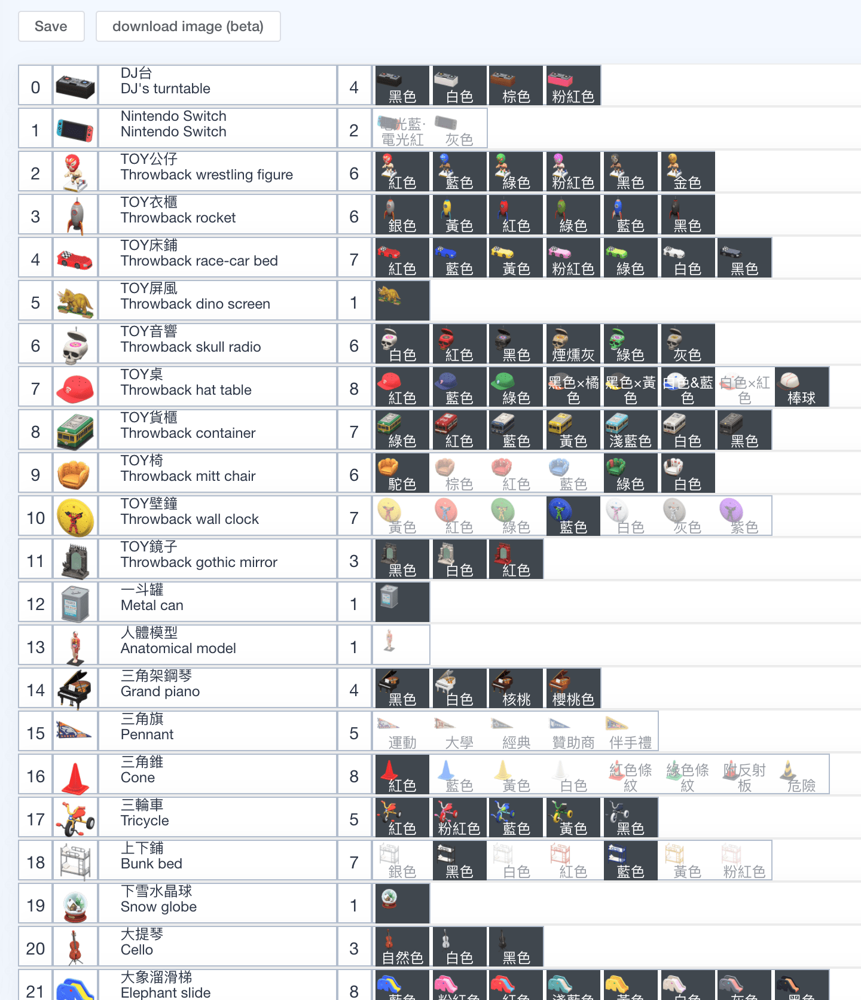
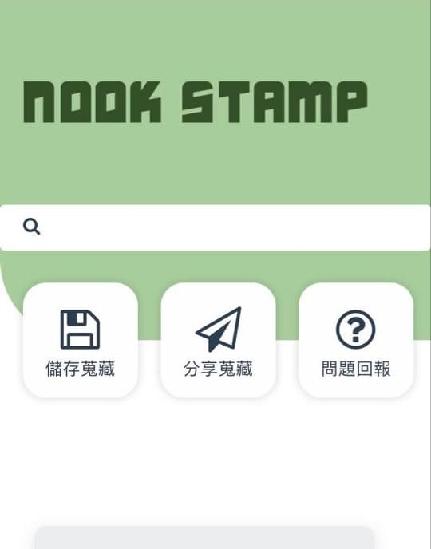

[作品]Nookstamp 傢俱搜集器
Nookstamp 傢俱搜集器
“Nookstamp 傢俱搜集器” 2020 螺絲起子工作室出品。
NookStamp is a web application written in React for ACNH. The main features of this application are to help you collect orderable furnitures, share collections with friends.
開發的初衷在於遊戲，苦手如我晚了其他人好一陣子才開始動物森友會的無人島生活。
玩了半個多月的撿樹枝撿石頭，僅能靠乾媽乾爹贊助我道具，
蒐集魂爆發又苦無有效方法。
心想一定有更方便記錄道具的方法阿~
直至某天天靈蓋一道念頭直衝腦門，
於是於平常假日會議工作團偶然提起，臨時起意開發了一週，
經過小夥夥伴們跨越時區日以繼夜的趕工。"Nookstamp 傢俱搜集器"成了我們工作室的第一個作品。
銘謝
感謝螺絲起子工作室小夥伴分跨三國的共同開發
- Lee Chen
- S.Y. Wang
- mengchie
Data source
We utilize the data from nookplaza.net. The following is the endpoint to collect the furniture data.
開發歷程
2020/05/15 以vue為基底開發 基本版收集器
2020/05/18 解決分享碼問題
- 將大量boolean資料用簡短string標示
- 參考 compressing-a-string-of-0s-and-1s-in-js
2020/05/22 加入ga 加入opengraph 加入facebook群眾分析
2020/05/23 上線 https://nookstamp.com
2020/05/23 初期使用者訪談
佛系玩家，對收集也有執著
- 只想看到自己有什麼（只想要炫耀讓朋友知道自己擁有什麼）
- 儲存成功的 popup 覺得很棒 💯
- 覺得選單很長
- Filter 做得很順 💯
- 清空機制
- 同時看到自己和朋友的蒐藏
較認真收集的玩家，遊戲時數長，會請朋友幫忙時空旅人
- 想要款式小字一目瞭然（variation name），兩種 view mode 都想要顯示（可能用 hover 不明顯）
- 利用款式小字來 filter
- 英文搜尋傢俱
- IPad 看的時候 grid 會跑版
認真玩家，很常互相寄傢俱，測試過程有把認真完全試用過
- 想要款式小字 （地燈 地圖等 圖片無法區分）
- 部分排序是錯的
佛系玩的玩家 跟風系
- table title 想要浮起來
Solution
all,owned,not owned)把 grid 的 with 變 dynamic，利用 Flexbox Grid用media query修
2020/05/25 前端UI重新設計整體翻新
2020/05/26 改善多清單滾動效能問題
2020/05/29 因上述套件有bug因此全數翻新到react
2020/06/04 加入廣告維持網域費用
開發小記
初期這款應用程式當然是跟著使用者需求進行開發，除了使用MVP思維之外，透過facebook群眾分析 與 google analytics，
理解使用者：
- 年齡族群
- 性別比例
- 裝置比例
- 境外境內
初期畫面

設計稿

最終討論不繼續維護的主要原因是廣告收益不佳，大部分的廣告都只支援內容農場的投放，對用web app不甚友善，製作遊戲小工具也有週期迭代，熱潮一過就很難創造營收。
但還是小紀錄一下:
- 同時最高人次上線破100
- 該週使用人次破4000
2021/02/20歸檔備份